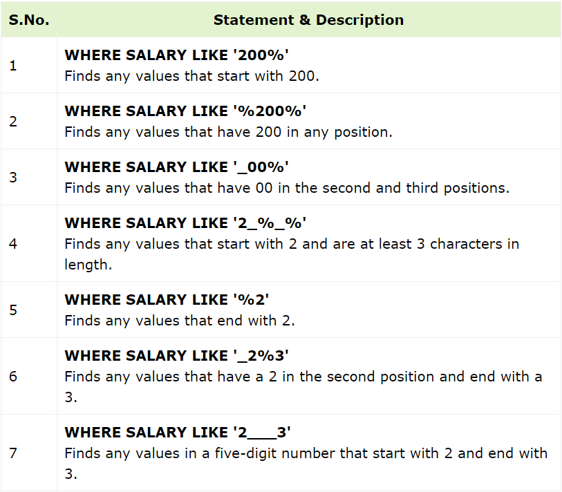

SQL Wildcards are special characters used as substitutes for one or more characters in a string. They are used with the LIKE operator in SQL,
to search for specific patterns in character strings or compare various strings.
The LIKE operator in SQL is case-sensitive, so it will only match strings that have the exact same case as the specified pattern.
The percent sign (%) represents zero, one, or multiple characters within a string. The underscore (_) represents a single character or number.
These symbols can also be used in combination to perform complex pattern searching and matching in SQL queries.
SELECT * FROM table_name
WHERE column_name LIKE [wildcard_pattern];
The following table demonstrates various ways of using wildcards in conjunction with the LIKE operator within a WHERE clause:
CREATE TABLE CUSTOMERS (
ID INT NOT NULL,
NAME VARCHAR (20) NOT NULL,
AGE INT NOT NULL,
ADDRESS CHAR (25),
SALARY DECIMAL (18, 2),
PRIMARY KEY (ID)
);
The following INSERT query adds records into the CUSTOMERS table:INSERT INTO CUSTOMERS VALUES
(1, 'Ramesh', 32, 'Ahmedabad', 2000.00),
(2, 'Khilan', 25, 'Delhi', 1500.00),
(3, 'Kaushik', 23, 'Kota', 2000.00),
(4, 'Chaitali', 25, 'Mumbai', 6500.00),
(5, 'Hardik', 27, 'Bhopal', 8500.00),
(6, 'Komal', 22, 'Hyderabad', 4500.00),
(7, 'Muffy', 24, 'Indore', 10000.00);
The table will be created as:SELECT * FROM CUSTOMERS WHERE SALARY LIKE '200%';